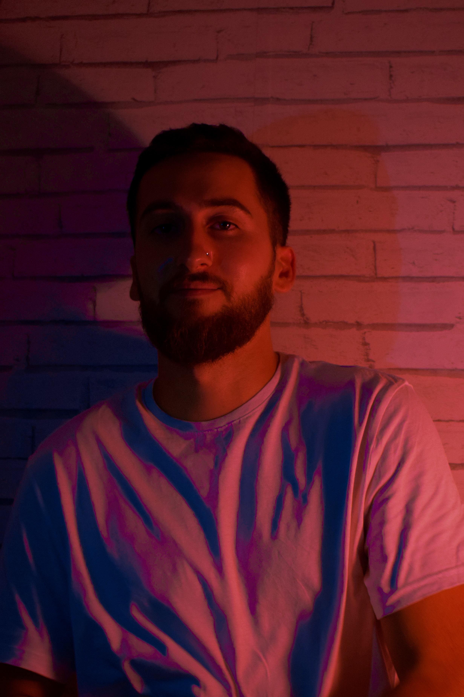

Mon parcours jusqu'à la Plateforme_
Après plusieurs expériences professionnelles
(vente, multimédia, et
principalement Airbus hélicoptère), j’ai
décidé de me former en tant
que développeur web, car c’est
derrière un écran que je suis le plus à
l’aise.
J’ai
obtenu en 2015 un BTS CRSA,et en 2018 un CQPM intégrateur
câbleur
qui m’a permis de travailler sur hélicoptère, mais je ne me suis
jamais épanoui dans ces domaines.
A propos de moi ...
J'ai 26 ans.
Je vis à Salon-de-Provence depuis 2 ans, mais je viens d'Aix-en-Pce.
Hormis le travail, je fais beaucoup de sport, malgré ma passion pour
les jeux vidéos, la musique, et la culture geek.